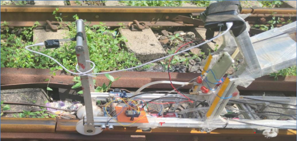
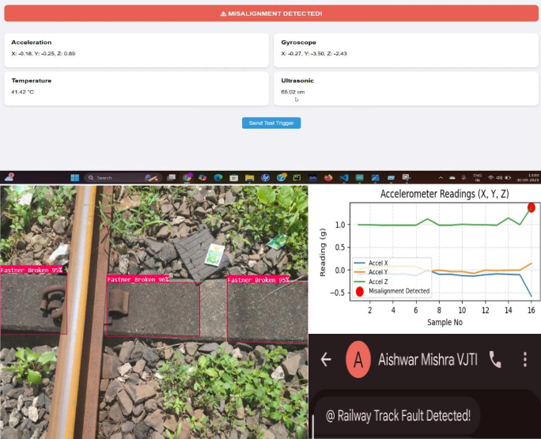

El problema
Indian Railways opera unos 68,000 km de vía. Cada kilómetro debe revisarse en busca de defectos — rieles fuera de alineación, sujeciones rotas, balasto desplazado, grietas superficiales. Si se pasa uno por alto, se produce un descarrilamiento.
La revisión la realizan Coches de Registro de Vía especializados. El sistema actual de India es importado, cuesta alrededor de ₹180 crore, funciona con software de código cerrado y no puede personalizarse ni repararse localmente. Si una zona quiere solo una parte del sistema, no puede tenerla — es todo o nada, de un solo proveedor.
Hay un segundo problema, más silencioso. Cuando se detecta un defecto, hay que saber exactamente dónde está para que una cuadrilla pueda repararlo. El sistema actual ubica los defectos por GPS, y el GPS falla en túneles, trincheras y corredores urbanos densos — precisamente donde los problemas de vía suelen ser peores.

Lo que construimos
Un prototipo sin contacto que hace el mismo trabajo con componentes comerciales — nada toca el riel, así que puede operar a velocidad sin desgaste.
Medir la vía. Sensores láser y ultrasónicos leen el perfil y la geometría del riel. Una IMU capta vibración y desalineación mediante aceleración vertical y horizontal. Un codificador óptico registra la distancia recorrida. Juntos producen los parámetros estándar de geometría de vía — ancho, alineación, irregularidad, peralte — con los que los inspectores ya trabajan.
Ver los defectos. Las cámaras alimentan una tubería de OpenCV que señala sujeciones rotas, invasión de balasto y daño superficial del riel a partir de video 1920×1080. Cuando detecta algo, el sistema envía una alerta SMS con la ubicación adjunta.

Saber dónde estás. En lugar de depender solo del GPS, fusionamos GPS con datos de la IMU y la distancia derivada del codificador. Cuando cae la señal satelital, el sistema sigue contando la posición desde la rueda y los sensores de movimiento. Esta fue la parte de la que estábamos más orgullosos — ataca directamente por qué la localización del sistema existente no es confiable.
Procesamiento a bordo. La primera pasada de detección ocurre en el propio dispositivo, sin dependencia de conectividad en campo. Los datos de tendencia a largo plazo se sincronizan a la nube para mantenimiento predictivo. Las salidas se exportan en CSV, XML y JPEG, para integrarse en los flujos que los ferrocarriles ya usan.
Las decisiones de diseño que importaron
Modular por defecto. Una zona ferroviaria puede desplegar solo el módulo de geometría, solo el de perfil de riel, o el conjunto completo. El sistema existente no lo permite, y esa es buena parte de por qué es caro.
Estándares primero, no al final. Mapeamos cada salida a RDSO TM/IM/448 y EN 13848 Partes 1–2 — los estándares indio y europeo de geometría de vía — para que los números sean directamente comparables con las bandas de tolerancia que los inspectores ya usan. Una medición sobre la que nadie puede actuar no vale la pena tomarla.
Stack abierto. Python, OpenCV, SQL. Sin dependencia de proveedor, mantenible por equipos de ingeniería indios.
Lo que pasó
Lo construimos, lo montamos y lo probamos sobre vía activa de Central Railway en Bombay — no en un banco de laboratorio. La extracción de geometría de vía y la adquisición de datos en tiempo real funcionaron en campo.
Nuestro costeo situó una versión nacional en unos ₹30 crore frente a los ₹180 crore del sistema importado, con el ahorro proveniente de sensores comerciales y un stack de software abierto, no de recortar capacidad.
La propuesta nos colocó en el top 3 de 80 equipos.
Lo que haría distinto
La cifra de ₹30 crore es una estimación de hackathon, no una cotización de compra — necesita una BOM real y precios de proveedores para sostenerse.
También identificamos, pero no implementamos, etiquetas RFID en vía como mejora adicional de localización. GPS más IMU deriva en distancias largas; puntos de referencia físicos fijos corregirían esa deriva. Esa es la siguiente iteración obvia.
Y validamos que el sistema funciona, no con qué precisión funciona. Una versión seria necesita límites de error medidos contra una referencia calibrada — que es la diferencia entre un prototipo y algo que un ferrocarril compre de verdad.